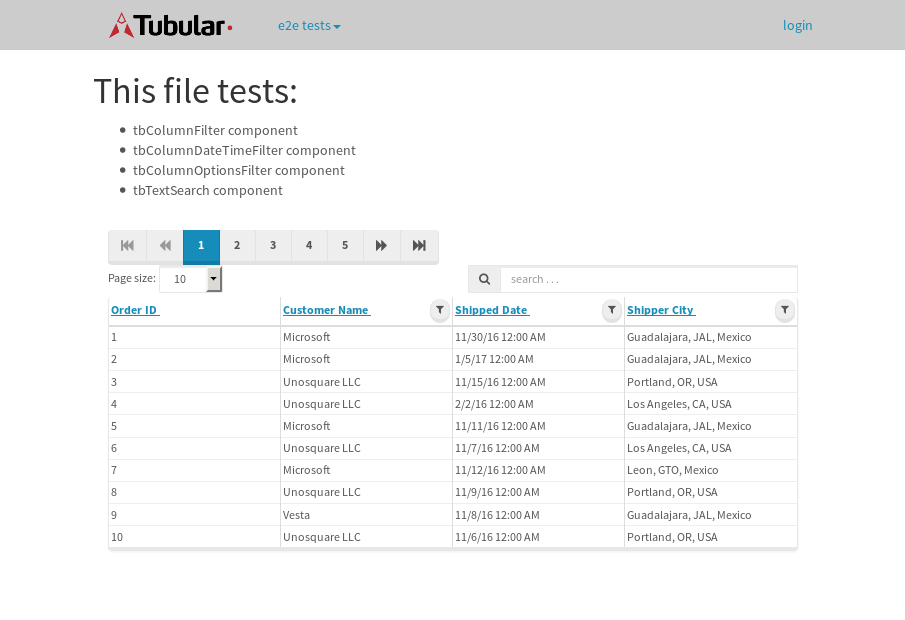
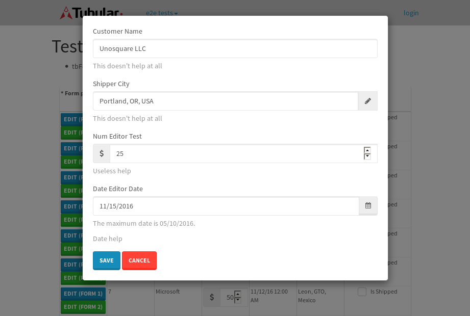
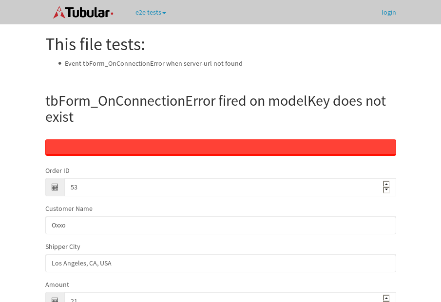
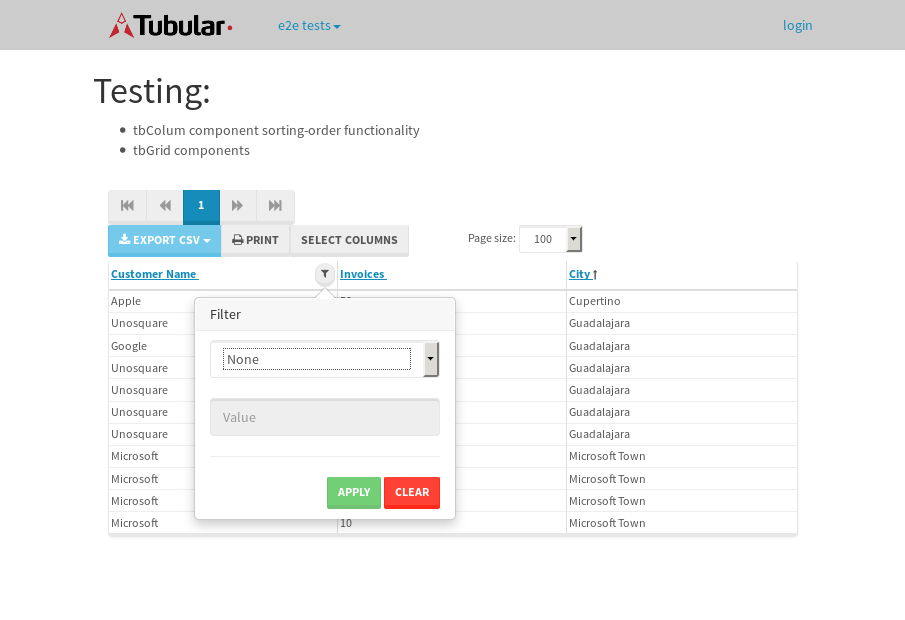

tbColumn.Grid Sorting - 28.103sTests: 5Skipped: 0Failures: 0 should sort data in ascending order then on descending order when sorting by Order Id column - 6.266sTests passed: 100.00%should order data in ascending order when click-sorting an unsorted text column - 4.921sTests passed: 100.00%should order data in descending order when click-sorting an ascending-sorted text column - 5.804sTests passed: 100.00%should order data in ascending order when click-sorting an unsorted date column - 5.216sTests passed: 100.00%should order data in descending order when click-sorting twice an unsorted date column - 5.894sTests passed: 100.00%
tbColumn.Grid Components - 3.759sTests: 3Skipped: 0Failures: 0 should print grid - 1.252s***Skipped***Tests passed: 0%should export grid - 1.128s***Skipped***Tests passed: 0%should show column selector - 1.379sTests passed: 100.00%
tbSingleForm.Form validations - 2.987sTests: 2Skipped: 0Failures: 0 should have an empty required field - 1.556sTests passed: 100.00%should not be able to click on save - 1.431sTests passed: 100.00%
Tubular Filters.tbColumnFilter - 109.01sTests: 12Skipped: 0Failures: 0 should cancel filtering when clicking outside filter-popover - 9.048sTests passed: 100.00%should disable Value text-input for "None" filter - 6.635sTests passed: 100.00%should disable apply button for "None" filter - 6.882sTests passed: 100.00%should decorate popover button when showing data is being filtered for its column - 12.264sTests passed: 100.00%should correctly filter data for the "Equals" filtering option - 8.692sTests passed: 100.00%should correctly filter data for the "Not Equals" filtering option - 8.322sTests passed: 100.00%should correctly filter data for the "Contains" filtering option - 8.887sTests passed: 100.00%should correctly filter data for the "Not Contains" filtering option - 9.006sTests passed: 100.00%should correctly filter data for the "Starts With" filtering option - 7.147sTests passed: 100.00%should correctly filter data for the "Not Starts With" filtering option - 7.091sTests passed: 100.00%should correctly filter data for the "Ends With" filtering option - 6.939sTests passed: 100.00%should correctly filter data for the "Not Ends With" filtering option - 6.909sTests passed: 100.00%
Tubular Filters.tbColumnDateTimeFilter - 139.22sTests: 12Skipped: 0Failures: 1 should cancel filtering when clicking outside filter-popover - 7.351sTests passed: 100.00%should disable Value text-input for "None" filter - 6.632sTests passed: 100.00%should disable apply button for "None" filter - 6.853sTests passed: 100.00%should clear filtering when clicking on Clean button - 18.844sExpected false to be true.✗Tests passed: 0.00%should decorate popover button when showing data is being filtered for its column - 12.26sTests passed: 100.00%should correctly filter data for the "Equals" filtering option - 7.326sTests passed: 100.00%should correctly filter data for the "Not Equals" filtering option - 7.349sTests passed: 100.00%should correctly filter data for the "Between" filtering option - 12.654sTests passed: 100.00%should correctly filter data for the "Greater-or-equal" filtering option - 12.977sTests passed: 100.00%should corretlly filter data for the "Greater" filtering option - 12.485sTests passed: 100.00%should correctly filter data for the "Less-or-equal" filtering option - 11.473sTests passed: 100.00%should correctly filter data for the "Less" filtering option - 11.784sTests passed: 100.00%
Tubular Filters.tbColumnOptionsFilter - 82.357sTests: 3Skipped: 0Failures: 0 should cancel filtering when clicking outside filter-popover - 8.727sTests passed: 100.00%should decorate popover button when showing data is being filtered for its column - 11.45sTests passed: 100.00%should filter column-elements in accordance to the selected filter when selecting a single option - 50.594sTests passed: 100.00%
Tubular Filters.tbTextSearch - 49.337sTests: 5Skipped: 0Failures: 1 min-chars is not set - 0.772sTests passed: 100.00%should filter data in searchable-column customer name to matching inputted text, starting from 3 characters - 6.944sTests passed: 100.00%should filter data in searchable-column shipper city to matching inputted text, starting from 3 characters - 12.421sTests passed: 100.00%should show clear button when there is inputted text only - 6.739sTests passed: 100.00%should clear filtering when clicking clear button - 16.707sExpected 10 not to be 10.✗Tests passed: 0.00%
tbForm related components.tbCheckboxField - 6.618sTests: 2Skipped: 0Failures: 0 should save changes on "SAVE" - 2.969sTests passed: 100.00%should discard changes on "CANCEL" - 2.294sTests passed: 100.00%
tbForm related components.tbDropDownEditor - 11.683sTests: 5Skipped: 0Failures: 0 should set initial input value to the value of "value" attribute when defined - 1.75sTests passed: 100.00%should show the component name value in a label field when "showLabel" attribute is true - 1.562sTests passed: 100.00%should show a help field equal to this attribute, is present - 1.783sTests passed: 100.00%should submit modifications to item/server when clicking form "Save" - 3.645sTests passed: 100.00%should NOT submit modifications to item/server when clicking form "Cancel" - 2.263sTests passed: 100.00%
tbForm related components.tbTextArea - 17.242sTests: 7Skipped: 0Failures: 0 should set initial input value to the value of "value" attribute when defined - 2.156sTests passed: 100.00%should be invalidated when the number of chars is not in the range of "min" and "max" attributes - 2.399sTests passed: 100.00%should show the component name value in a label field when "showLabel" attribute is true - 1.732sTests passed: 100.00%should show a help field equal to this attribute, is present - 1.703sTests passed: 100.00%should require the field when the attribute "required" is true - 2.453sTests passed: 100.00%should submit modifications to item/server when clicking form "Save" - 3.409sTests passed: 100.00%should NOT submit modifications to item/server when clicking form "Cancel" - 2.499sTests passed: 100.00%
tbForm related components.tbDateEditor - 18.149sTests: 6Skipped: 0Failures: 4 should set initial date value to the value of "value" attribute when defined - 2.527sExpected false to be true.✗Tests passed: 0.00%should be invalidated when the date is not in the range of "min" and "max" attributes - 2.737sExpected false to be true.✗Expected 1 to be less than 1.✗Tests passed: 33.33%should show the component name value in a label field when "showLabel" attribute is true - 2.65sTests passed: 100.00%should show a help field equal to this attribute, is present - 2.255sTests passed: 100.00%should submit modifications to item/server when clicking form "Save" - 2.994sExpected false to be true.✗Tests passed: 0.00%should NOT submit modifications to item/server when clicking form "Cancel" - 3.16sExpected false to be true.✗Tests passed: 0.00%
tbForm related components.tbTypeaheadEditor - 18.466sTests: 7Skipped: 0Failures: 1 should show an options list when there is an API-info/component entered-data - 2.249sTests passed: 100.00%should select the option clicked - 2.699sTests passed: 100.00%should show a "delete" button when an option/match is selected, and delete the option if button is clicked - 2.302sFailed: each key must be a number of string; got boolean✗Tests passed: 50.00%should show a label value equal to the component name when "showLabel" attribue is true - 2.163sTests passed: 100.00%should require a value when "require" attribute is true - 2.552sTests passed: 100.00%should submit modifications to item/server when clicking form "Save" - 3.495sTests passed: 100.00%should NOT submit modifications to item/server when clicking form "Cancel" - 2.143sTests passed: 100.00%
tbForm related components.tbSimpleEditor - 26.437sTests: 9Skipped: 0Failures: 1 should set initial input value to the value of "value" attribute when defined - 2.229sTests passed: 100.00%should be invalidated when the number of chars is not in the range of "min" and "max" attributes - 2.838sTests passed: 100.00%should show the component name value in a label field when "showLabel" attribute is true - 1.739sTests passed: 100.00%should set input placeholder to the value of "placeholder" attribute - 2.069sTests passed: 100.00%should validate the control using the "regex" attribute, if present - 2.718sFailed: each key must be a number of string; got function✗Tests passed: 0.00%should show a help field equal to this attribute, is present - 2.362sTests passed: 100.00%should require the field when the attribute "required" is true - 2.487sTests passed: 100.00%should submit modifications to item/server when clicking form "Save" - 5.539sTests passed: 100.00%should NOT submit modifications to item/server when clicking form "Cancel" - 3.641sTests passed: 100.00%
tbForm related components.tbNumericEditor - 24.536sTests: 7Skipped: 0Failures: 0 should set initial component value to the value of "value" attribute when defined - 2.288sTests passed: 100.00%should be invalidated when the entered number is not in the range of "min" and "max" attributes - 3.621sTests passed: 100.00%should show the component name value in a label field when "showLabel" attribute is true - 2.776sTests passed: 100.00%should show a help field equal to this attribute, is present - 2.665sTests passed: 100.00%should require the field when the attribute "required" is true - 2.635sTests passed: 100.00%should submit modifications to item/server when clicking form "Save" - 5.938sTests passed: 100.00%should NOT submit modifications to item/server when clicking form "Cancel" - 2.616sTests passed: 100.00%
tbForm Connection Error - 2.651sTests: 1Skipped: 0Failures: 0 tbForm connection error functionality - 0.41sTests passed: 100.00%
tbForm Connection Error - 3.789sTests: 1Skipped: 0Failures: 0 tbForm connection error functionality - 0.424sTests passed: 100.00%
tbForm Connection Error - 2.483sTests: 1Skipped: 0Failures: 1 tbForm connection error functionality - 0.358sExpected '' to equal 'No data found'.✗Tests passed: 0.00%
tb Form Date Editor.tbDateEditor - 26.267sTests: 6Skipped: 0Failures: 0 should set initial date value to the value of "value" attribute when defined - 3.21sTests passed: 100.00%should be invalidated when the date is not in the range of "min" and "max" attributes - 3.375sTests passed: 100.00%should show the component name value in a label field when "showLabel" attribute is true - 3.738sTests passed: 100.00%should show a help field equal to this attribute, is present - 2.917sTests passed: 100.00%should submit modifications to item/server when clicking form "Save" - 4.917sTests passed: 100.00%should NOT submit modifications to item/server when clicking form "Cancel" - 4.861sTests passed: 100.00%
tbGridComponents - 10.834sTests: 6Skipped: 0Failures: 0 should add item with newRow method - 2.547sTests passed: 100.00%should add item with newRow method and cancel action - 0.973sTests passed: 100.00%should update item with tbSaveButton - 2.023sTests passed: 100.00%should update item with tbSaveButton and cancel action - 1.048sTests passed: 100.00%should remove item with tbRemoveButton - 1.296sTests passed: 100.00%should remove item with tbRemoveButton and cancel action - 0.941sTests passed: 100.00%
tbGridPager.navigation buttons - 9.484sTests: 1Skipped: 0Failures: 0 should perform no action when clicking on the numbered navigation button corresponding to the current-showing results page - 1.877sTests passed: 100.00%
tbGridPager.navigation buttons.first/non-last results page related functionallity - 3.946sTests: 2Skipped: 0Failures: 0 should disable "first" and "previous" navigation buttons when in first results page - 1.544sTests passed: 100.00%should enable "last" and "next" navigation buttons when in a results page other than last - 2.402sTests passed: 100.00%
tbGridPager.navigation buttons.last/non-first results page related functionallity - 3.66sTests: 2Skipped: 0Failures: 0 should disable "last" and "next" navigation buttons when in last results page - 1.791sTests passed: 100.00%should enable "first" and "previous" navigation buttons when in a results page other than first - 1.869sTests passed: 100.00%
tbGridPager.page navigation - 9.433sTests: 5Skipped: 0Failures: 0 should go to next results page when clicking on next navigation button - 1.789sTests passed: 100.00%should go to previous results page when clicking on previous navigation button - 1.833sTests passed: 100.00%should go to last results page when clicking on last navigation button - 2.826sTests passed: 100.00%should go to first results page when clicking on first navigation button - 1.393sTests passed: 100.00%should go to corresponding results page when clicking on a numbered navigation button - 1.592sTests passed: 100.00%
tbGridPagerInfo - 5.956sTests: 2Skipped: 0Failures: 0 should show text in accordance to numbered of filter rows and current results-page - 1.806sTests passed: 100.00%should show count in footer - 0.876sTests passed: 100.00%
tbHttp - 23.586sTests: 8Skipped: 0Failures: 0 should be authenticated - 3.753sTests passed: 100.00%retrieve data - 2.345sTests passed: 100.00%should not login bad credentials - 2.881sTests passed: 100.00%should have a refresh token - 2.508sTests passed: 100.00%should remove authentication - 2.539sTests passed: 100.00%get method-Is not authenticated - 2.347sTests passed: 100.00%post method-Is not authenticated - 4.373sTests passed: 100.00%should regenerate access token on post - 2.84sTests passed: 100.00%
LocalData.Grid Local Data Sorting - 7.743sTests: 4Skipped: 0Failures: 1 should order data in ascending order when click-sorting an unsorted text column - 2.171sTests passed: 100.00%should order data in descending order when click-sorting an ascending-sorted text column - 1.788sTests passed: 100.00%should correctly filter data for the "Contains" filtering option - 1.42sFailed: Element is not enabled✗Tests passed: 0.00%should correctly filter data for the "Contains" with ENTER key - 2.361sTests passed: 100.00%
OData.Grid OData Sorting - 43.773sTests: 7Skipped: 0Failures: 1 should order data in ascending order when click-sorting an unsorted numeric column - 7.179sTests passed: 100.00%should order data in descending order when click-sorting an ascending-sorted numeric column - 7.239sTests passed: 100.00%should order data in ascending order when click-sorting an unsorted text column - 4.718sTests passed: 100.00%should order data in descending order when click-sorting an ascending-sorted text column - 7.218sTests passed: 100.00%should order data in ascending order when click-sorting an unsorted date column - 5.584sTests passed: 100.00%should order data in descending order when click-sorting an ascending-sorted date column - 8.202sTests passed: 100.00%should correctly filter data for the "Contains" filtering option - 3.631sFailed: Element is not enabled✗Tests passed: 0.00%
tbPageSizeSelctor - 19.358sTests: 4Skipped: 0Failures: 0 should filter up to 10 data rows per page when selecting a page size of "10" - 3.292sTests passed: 100.00%should filter up to 20 data rows per page when selecting a page size of "20" - 3.313sTests passed: 100.00%should filter up to 50 data rows per page when selecting a page size of "50" - 5.576sTests passed: 100.00%should filter up to 100 data rows per page when selecting a page size of "100" - 5.486sTests passed: 100.00%
tbRowSelectable - 15.399sTests: 2Skipped: 0Failures: 0 selected rows - 7.467sTests passed: 100.00%unselected rows - 5.493sTests passed: 100.00%
tbSingleForm.Form fields - 18.595sTests: 7Skipped: 0Failures: 1 should load correct info - 1.244sTests passed: 100.00%should change customer name - 1.038sTests passed: 100.00%should save it - 5.101sFailed: Element is not enabled✗Tests passed: 0.00%should clear the inputs - 1.189sTests passed: 100.00%should update - 1.466sTests passed: 100.00%should reset editor - 5.325sTests passed: 100.00%should not save if not Changes - 3.23sTests passed: 100.00%
tbSingleForm.Form validations - 2.681sTests: 2Skipped: 0Failures: 0 should load correct info - 1.136sTests passed: 100.00%should not be able to click on save - 1.545sTests passed: 100.00%
tubularTemplateServiceModule.#createColumns() - 1.861sTests: 2Skipped: 0Failures: 0 should return an array with 7 elements - 0.886sTests passed: 100.00%first element should match - 0.975sTests passed: 100.00%
tubularTemplateServiceModule.#generateFieldsArray() - 2.675sTests: 2Skipped: 0Failures: 0 should return an array with 7 elements - 1.167sTests passed: 100.00%first element should match - 1.508sTests passed: 100.00%
tubularTemplateServiceModule.#generatePopup() - 0.965sTests: 1Skipped: 0Failures: 0 should html match - 0.965sTests passed: 100.00%
tubularTemplateServiceModule.#getEditorTypeByDateType() - 3.705sTests: 4Skipped: 0Failures: 0 should be tbDateTimeEditor - 1.012sTests passed: 100.00%should be tbNumericEditor - 0.899sTests passed: 100.00%should be tbCheckboxField - 0.973sTests passed: 100.00%should be tbSimpleEditor - 0.82sTests passed: 100.00%
tubularTemplateServiceModule.#generateForm() - 3.479sTests: 3Skipped: 0Failures: 0 should single layout html match - 1.317sTests passed: 100.00%should two columns layout html match - 1.265sTests passed: 100.00%should three columns layout html match - 0.897sTests passed: 100.00%
tubularTemplateServiceModule.#generateCells() - 0.9sTests: 1Skipped: 0Failures: 0 should html match - 0.9sTests passed: 100.00%
tubularTemplateServiceModule.#generateGrid() - 1.298sTests: 1Skipped: 0Failures: 0 should html match - 1.298sTests passed: 100.00%


{kind=link}
{kind=link}
{kind=link}
{kind=link}